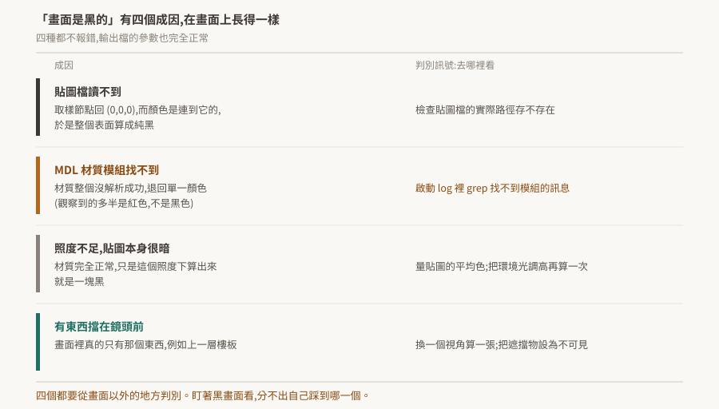

07 · 渲染與材質:「畫面是黑的」有四個成因
算出來的畫面是黑的。沒有例外、沒有錯誤訊息,輸出的影片檔參數完全正常——解析度對、長度對、寫檔成功。
這種情況下最沒有效率的動作是盯著那張黑畫面看,因為四個完全不同的成因在畫面上長得一模一樣。

驗證狀態:§2–§5 的機制與症狀來自姊妹 repo 在 Isaac Sim 5.1 場景上的實測,已標明。本 repo 沒有 Kit 環境,未實機複驗。§1 的架構敘述證據較弱,已在該節標明。§7 是待驗清單。
1. Hydra 讓算圖後端可以換
Kit 的算圖走 USD 的 Hydra:場景資料交給 Hydra,Hydra 再交給一個 render delegate 去畫,RTX 是其中一個。這個分層讓「換算圖後端」不必動場景。
這一節的證據等級較弱——本 repo 取到的是文件摘要,沒有取到官方逐字定義。後面幾節的實測結論不依賴這一節的細節。
實務上會用到的一點:算圖後端是可以換的,而同一個場景在不同後端下的表現可以不同。回報渲染問題時要標明用的是哪個 delegate。
2. 貼圖讀不到,結果是純黑
這是最違反直覺的一條。
貼圖檔不存在時,取樣節點回傳 (0,0,0)。而表面的顏色參數是連到那個取樣節點的,所以整個表面算出來是黑色。
缺貼圖不是素色,是純黑。
會覺得違反直覺,是因為「檔案不見了應該退回預設值」是多數系統的行為。這裡沒有退回預設,因為從資料流的角度看根本沒有「缺失」——取樣節點回了一個合法的顏色,只是那個顏色是零。
判別方式:檢查貼圖檔的實際路徑存不存在,不要看畫面。這一條在資產搬家時特別容易踩——材質庫常常不在模型目錄底下,只搬模型目錄就會缺一整批。
3. MDL 模組找不到,結果是單一顏色
另一種材質缺失,症狀不同:整個材質沒有解析成功,模型變成單一顏色、貼圖全無。實測觀察到的多半是紅色。
兩種缺失,兩種顏色,代表不同的東西:
| 看到 | 缺的是 | 去哪裡查 |
|---|---|---|
| 純黑 | 貼圖檔 | 貼圖的實際路徑 |
| 單一顏色(常見紅色) | MDL 材質模組 | 啟動 log |
MDL 那種在 log 裡有明確訊息,grep 找不到模組的字樣即可確認。用 log 判別,不要靠肉眼看畫面猜——因為下一節那兩種黑會混進來。
4. 兩種與材質無關的黑
照度不足加上深色貼圖。 材質完全正常,只是在那個照度下算出來就是一塊黑。實測過的一個例子:一張金屬板貼圖的 diffuse 平均色量出來是 (61, 50, 28)/255,在該場域的照度下整面牆算成一塊黑,跟「材質壞掉」在畫面上分不出來。
處理方式有兩個方向:把環境光調高,或把深色貼圖換成純色。實務上純色還有一個附帶好處——純色不會有「貼圖檔不在就變全黑」的風險(§2)。
有東西擋在鏡頭前。 畫面裡真的只有那個東西。多層樓的場景最容易踩:每層樓板不透明,任何外部視角看到的都是屋頂。
5. visibility 只影響算圖,不改變碰撞
要看到被樓板擋住的東西,直覺做法是把樓板設成不可見。這可以,但要知道它做了什麼、沒做什麼:
visibility只影響算圖,不改變碰撞。
樓板設為不可見之後,畫面上它消失了,而在上面跑的東西照樣在上面跑——碰撞形狀還在那裡。
這是 USD 的語意:可見性是給算圖看的屬性,物理那一層讀的是別的東西。這條的實測是在 Isaac Sim 的物理環境上做的(車照樣在不可見的樓板上行走),但可見性本身的語意屬於 USD 這一層,任何 Kit 應用都適用。
反過來也成立而且更容易誤判:把東西設成可見,不會讓它產生碰撞。
6. 判別紀律:不要看畫面
四個成因疊加起來的實測案例:錄出來 2833 幀全黑,而 mp4 的參數(1280×720、94 秒)完全正常,寫檔也沒有報錯。
如果當時的判別方式是「看畫面」,那 2833 幀提供的資訊量等於零——它們全部長得一樣。有效的動作全部在畫面之外:
- 貼圖路徑存不存在(§2)
- log 裡有沒有 MDL 模組缺失(§3)
- 貼圖的平均色是多少、環境光調高之後有沒有變(§4)
- 換一個視角算一張(§4)
這與 02 §7、05 §5 是同一條紀律的渲染版:輸出看起來正常,不代表它是對的。 這裡甚至更極端一點——輸出的每一項參數都正確,錯的只有內容。
7. 待驗清單
| # | 待驗的斷言 | 怎麼驗 | 什麼算通過 |
|---|---|---|---|
| 1 | 貼圖讀不到會算成純黑(§2) | 建一個帶貼圖的材質,把貼圖檔改名再算一張 | 表面變純黑,而不是退回某個預設色 |
| 2 | MDL 模組缺失是另一種顏色(§3) | 移走 MDL 材質庫再算一張,同時看 log | 顏色與第 1 條不同,且 log 有明確訊息 |
| 3 | visibility 不影響碰撞(§5) |
把一個承載物設為不可見,讓東西掉上去 | 東西停在原本的表面上 |
| 4 | 可見不會產生碰撞(§5) | 一個沒有碰撞 API 的 prim 設為可見 | 東西穿過去 |
| 5 | 不同 render delegate 的表現差異(§1) | 同一場景換後端各算一張 | 記錄差異,或確認沒有差異 |
第 1、2 兩條合起來是這一篇的骨幹:它們讓「黑」與「單色」變成可以區分的訊號。在驗到之前,遇到黑畫面仍然照 §6 的順序逐項排除,不要從畫面推成因。